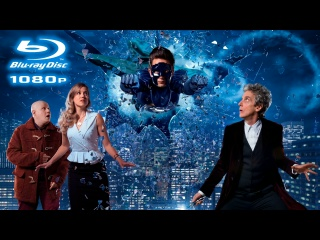
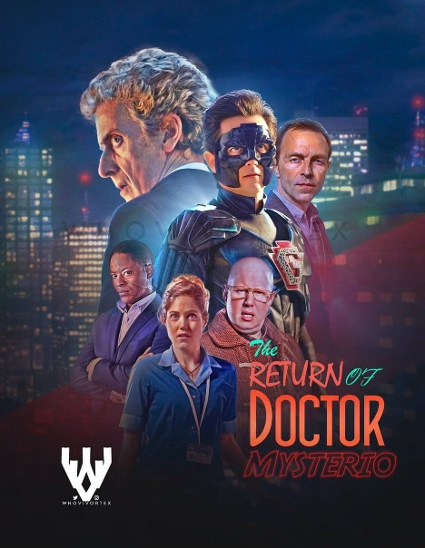

чаще всего это нулевая серия десятого сезона

The Return of Doctor Mysterio
рождественский спецвыпуск
25 декабря 2016
Формат: 60-минутный эпизод
| Варианты озвучек: | * Разные: смотрите по инструкции чаще всего это нулевая серия десятого сезона |
|---|---|
| Скачивание и просмотр: |
На Рождество Доктора и супергероя в маске ждет приключение в Нью-Йорке.
